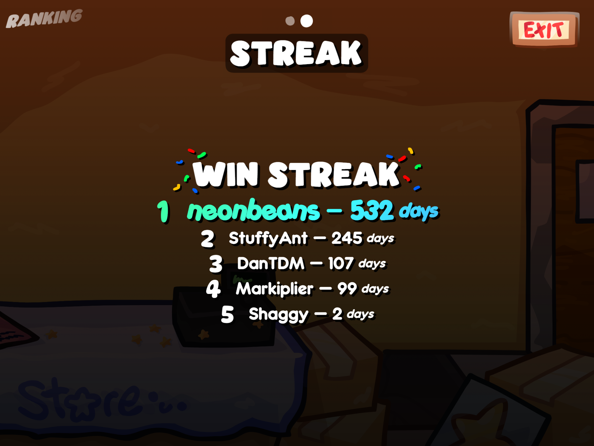

Devlog 26.11.1
November 6th, 2026
Quality of life
New month, meaning a new Hall Pass update for all of you Hall Passers... or Leaders... orrrr something else I'm not sure.
Some of the things that I added are...
I've added a new timer during battles and fights! The faster you complete battles, the bigger a [i]multiplier[/i] you will gain for your gold stars!
You can now select a difficulty for each battle! The character's difficulty won't change, but if you want more experienced gameplay, you can now play on Expert Mode.
You can now customize your keybinds for dialogue and other keyboard-compatible controls I've added. (You can also now go to the start screen from the menu!)
Yup. I added streaks to Hall Pass. If you complete one battle every day, your streak goes up and your rank will be updated both in the game and on Newgrounds.
Finally, there are now achievements! Only two so far, however; I wanted to test the achievement optimization before adding anything crazy.
Too Late by The Happy Fits.
In conclusion...
I am glad to complete another Hall Update update! I've had a lot of motivation for it and I feel like this update really helped make things more friendly and compatible for everyone, regardless of what they're playing on.
Next month, I want to address the future of Hall Pass moving forward, since we're reaching the end of 2026. I have some big aspirations for this game, and I want to share some of the things that I am able to do with my switch-over to PenguinMod, and I'm very excited to share that with all of you!
Thank you for taking the time to read my devlog, and make sure to check out my other work!
-Neon